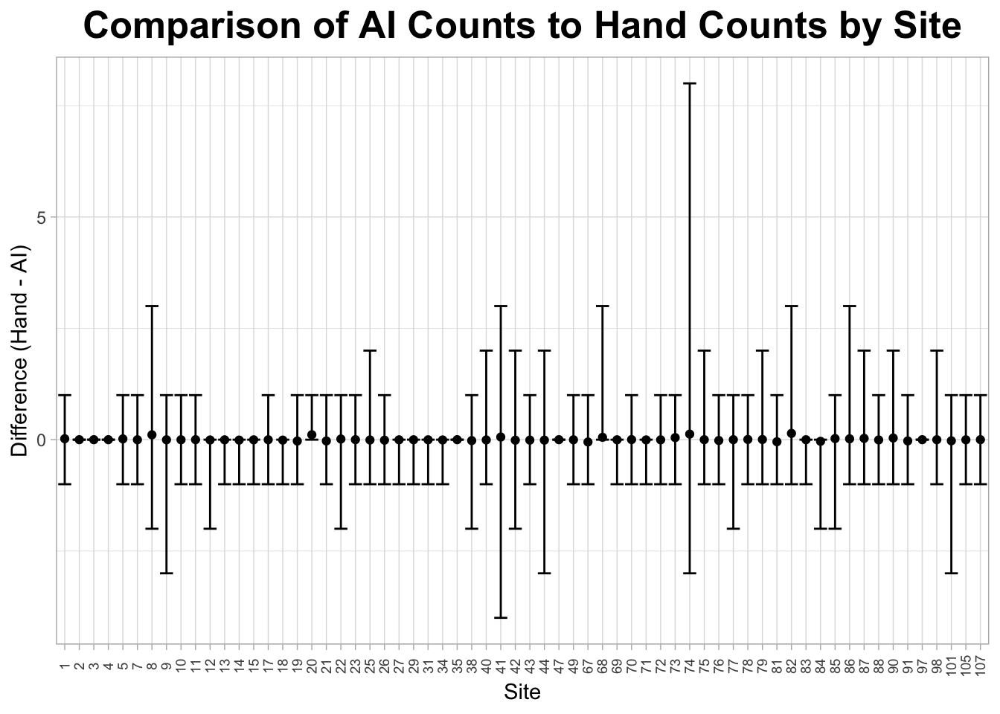

Chapter 4 Checking Site-level Agreement
Even though overall agreement is really good, it’s possible that there are some sites where the AI is less effective because of the terrain, shade level, etc. Because our sites don’t change, if I identify problem sites now, I can know to not trust the AI’s counts and to hand–count these sites in the future.
First things first: I want to check the min, max, and mean of count difference for each site.
site_diff <- ai_hand %>%
group_by(site_id) %>%
summarize(n = n(),
min_diff = min(diff),
mean_diff = mean(diff),
max_diff = max(diff))
site_diff %>%
arrange(desc(max_diff)) %>%
slice_head(n = 20) %>%
rename(Site = site_id,
"Number of Observations" = n,
Min_Diff = min_diff,
Mean_Diff = mean_diff,
Max_Diff = max_diff) %>%
knitr::kable(align = "c")| Site | Number of Observations | Min_Diff | Mean_Diff | Max_Diff |
|---|---|---|---|---|
| 74 | 1585 | -3 | 0.1249211 | 8 |
| 8 | 312 | -2 | 0.1089744 | 3 |
| 41 | 14694 | -4 | 0.0596162 | 3 |
| 68 | 946 | 0 | 0.0528541 | 3 |
| 82 | 191 | -1 | 0.1413613 | 3 |
| 86 | 2224 | -1 | 0.0193345 | 3 |
| 25 | 11352 | -1 | -0.0069591 | 2 |
| 40 | 2112 | -1 | -0.0066288 | 2 |
| 42 | 2229 | -2 | -0.0116644 | 2 |
| 44 | 4905 | -3 | -0.0101937 | 2 |
| 75 | 1812 | -1 | -0.0005519 | 2 |
| 79 | 2828 | -1 | 0.0042433 | 2 |
| 87 | 2582 | -1 | 0.0290473 | 2 |
| 90 | 2379 | -1 | 0.0369903 | 2 |
| 98 | 1234 | -1 | -0.0008104 | 2 |
| 1 | 622 | -1 | 0.0209003 | 1 |
| 5 | 171 | -1 | 0.0175439 | 1 |
| 7 | 489 | -1 | -0.0020450 | 1 |
| 9 | 4666 | -3 | -0.0025718 | 1 |
| 10 | 3546 | -1 | -0.0016920 | 1 |
Definitely a lot of variation! Some sites are perfect, others are in between, and one site (Site 74) has the biggest over-count AND nearly the biggest under-count. To help better get a grasp of the variation, I’m going to plot it by site.
site_diff %>%
arrange(desc(site_id)) %>%
ggplot(aes(x = factor(site_id), y = mean_diff)) +
geom_point() +
geom_errorbar(aes(ymin = min_diff, ymax = max_diff)) +
labs(title = "Comparison of AI Counts to Hand Counts by Site", x = "Site", y = "Difference (Hand - AI)") +
theme_light() +
theme(plot.title = element_text(size = 19, face = "bold", hjust = 0.5),
axis.title = element_text(size = 11),
axis.text.x = element_text(size = 7, angle = 90, vjust = 0.5))
While this is a good eyeball assessment, I want to firmly identify “problem” sites. A “problem” site in this case is going to be defined as any site that correctly counts <90% of all photos.
ai_hand %>%
group_by(site_id, diff) %>%
summarize(freq = n()) %>%
mutate(percent = round((freq/sum(freq)*100), digits = 2) ) %>%
filter(max(percent) < 90) %>%
top_n(1, percent) %>%
select(site_id, percent) %>%
rename(Site = site_id,
"Percent Correct AI Counts" = percent) %>%
knitr::kable(align = "c") | Site | Percent Correct AI Counts |
|---|---|
| 8 | 77.88 |
| 20 | 88.89 |
| 74 | 87.95 |
| 82 | 89.01 |
Only four sites! That’s not bad. And most of them hover around 90% agreement, with only one site (Site 8) sporting a truly abysmal 77.88% agreement. Now that I know these sites are difficult for the AI to count deer at, I can be sure to check their counts by hand going forward.